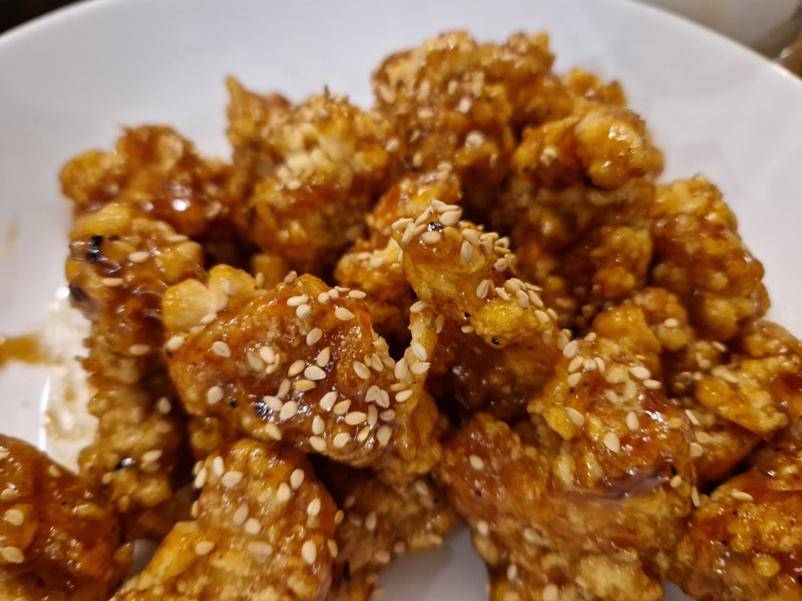

Honey Sesame Sauce
 Vegetarian/Vegan
Vegetarian/Vegan
Classic british takeaway sauce for use with Chinese Battered Chicken for Sweet and Sour

1/2 cuphoney1/4 cupsoy sauce2 tbspketchup1 tspsriracha or other medium chilli sauce1 tbspbrown sugar2 tbsprice vinegar1 tbsptoasted sesame oil2 tspcornstarch1 tspvegetable oil1 tspminced fresh garlic2 tbspsesame seeds2 tbspsliced green onions
In a bowl combine the honey, soy sauce, ketchup, sriracha, brown sugar, rice vinegar, sesame oil and 2 teaspoons of cornstarch.
Heat the teaspoon of oil in a large pan over medium heat. Add the garlic and cook for 30 seconds.
Add the honey sauce mixture and bring to a simmer. Cook for 3-4 minutes or until just thickened.
Add the crispy chicken to the pan and toss to coat with the sauce.
To serve, sprinkle with sesame seeds and green onions.